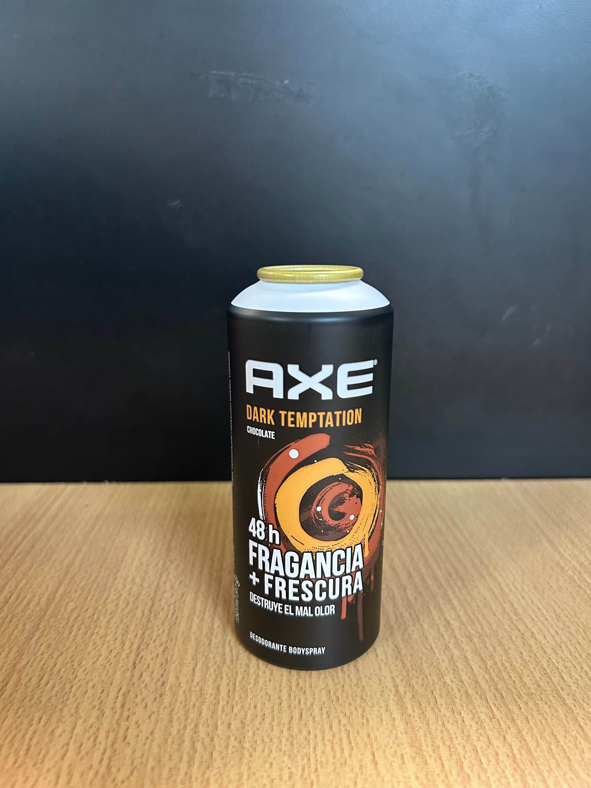

Axe, también conocido como Lynx en algunos países, es una marca de desodorante para hombres que fue lanzada por la compañía Unilever en 1983. La marca se ha convertido en una de las más reconocidas en el mundo de los productos para hombres, con una amplia gama de productos que incluye desodorantes, champús, acondicionadores, lociones y otros productos de cuidado personal.
